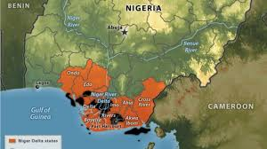
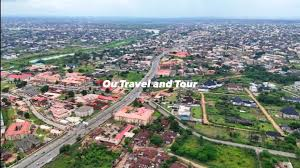
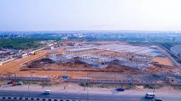

A historic riverine kingdom of the 16 vibrant communities, cradle of oil wealth, and guardian of ancient Igbo traditions. Discover our resilience, culture, and enduring spirit.



The Egbema kingdom, located in Imo and Rivers states, is an ancient, oil-rich, primarily Igbo-speaking community (specifically 16 villages) with deep roots in the Niger Delta. Historically linked to early Portuguese trade (c. 1445), it became a crucial trading hub, now heavily impacted by oil exploitation, pollution, and administrative division.
Egbema spans Imo and Rivers States, sharing a unified ancestry despite being split by political boundaries in 1976. They are primarily a sub-dialect of the Igbo language (Igboid) group located in the Niger Delta hinterland, with a history influenced by early interactions with European traders. They are distinct from the Ijaw Egbema in Delta/Edo states.
Oil exploitation has brought significant environmental degradation and socioeconomic issues, including pollution and marginalization despite the region's rich resources.
Egbema Oil kingdom spans the rich flood lains of Imo and Rivers States, a major oil-producing region with deep ancestral roots. Our 16 autonomous communities maintain traditional governance system (Nze Obi) while collectively fostering development and cultural preservation.
Since the discovery of commercial oil in the late 1956s, Egbema has contributed over 5% of Nigeria's petroleum output. Yet our identity remains tied to the land, water, and festivals that celebrates our ancestors. We are stewards of both black Gold and living heritage.
16 Communities- United in diversity
Major Oil Hub- Shell, Agip, Total Energy etc
Masquerade festivals, sacred water spirits,and the rhythm of the talking drum defines Egbema identity.
From the annual Alinso Festival that celebrates ancestral reverence to vibrant wrestling contests showcasing young warriors, our culture pulsates with life. Traditional marriage rites, folks music, and the iconic Egbema-Igbo cuisine (spicy fish pepper soup, palm wine) creates a rich tapestry.
Honoring ancestors, the masquerades appear during dry and even rainy seasons- messengers between the living and the spirit world. The community gathers to witness dances, moral parables, and blessings.
The Egbema kingdom, an ancient community in Nigeria's Niger Delta, is a major oil-producing region spanning Edo, Delta, Imo, and Rivers States. Historically, the Egbema settled between the 15th and 17th centuries, engaging in farming, fishing, and trade. Oil was discovered in commercial quantities in the late 1950s, making it a critical hub for Nigeria's petroleum Industry, currently contributing a significant portion of national production.
Discovery: Commercial oil exploration began in the late 1950s, profoundly changing the economy
from traditional Agriculture.
Production: The area is home to over forty producing oil wells operated by multinationals like
Shell, Agip, and Total Energy.
Impact: While oil has boosted national revenue, the community has faced
challenges related to environmental degradation and the need for infrastructure development.
Egbema Alinso: Also known as Ohaji/Egbema, established in 1976 in Imo State, is an oil-rich region formed from the old Owerri and Ogboko divisions, predominantly inhabited by the Igbo ethnic group, known as a major economic hub. It is historically characterized by agricultural productivity (Adapalm) and massive oil/gas resources, though often cited as politically marginalized.
40+ Oil Wells:
Active production
16 Communities:
United under one kingdom
500+ Years
Of ancestral heritage